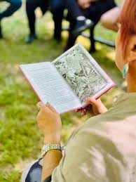
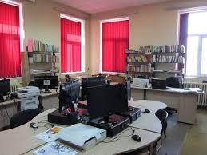
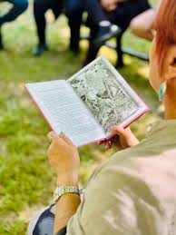
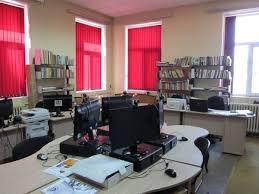

New Library Opened
 



The new public library in Knezha officially opened its doors with a ribbon-cutting ceremony. Residents now have access to thousands of books, free Wi-Fi, and digital resources.
The two-story building includes study areas, a children's corner, and a digital media room. The library is open Monday through Saturday from 8:00 AM to 8:00 PM.